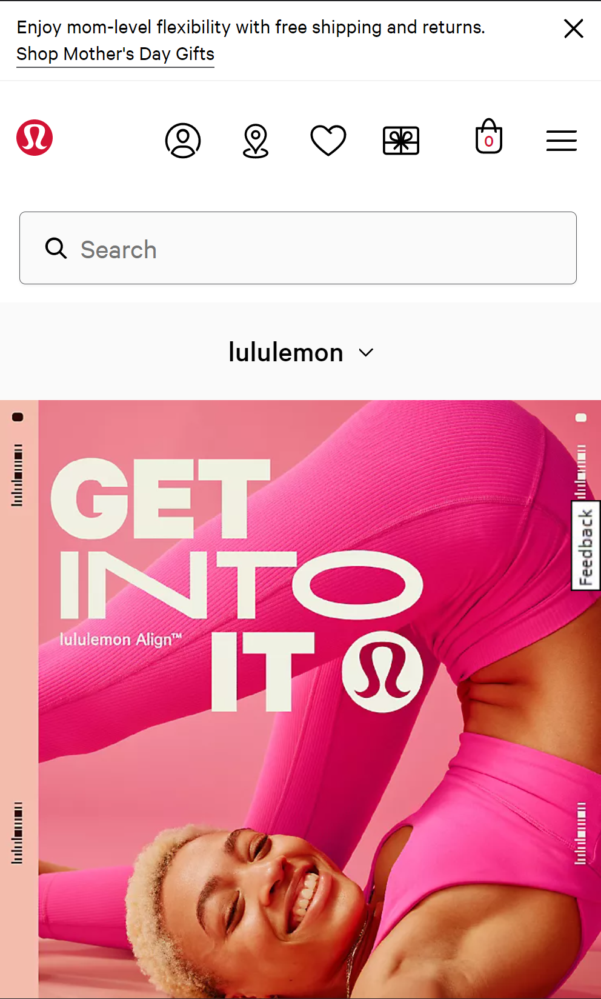
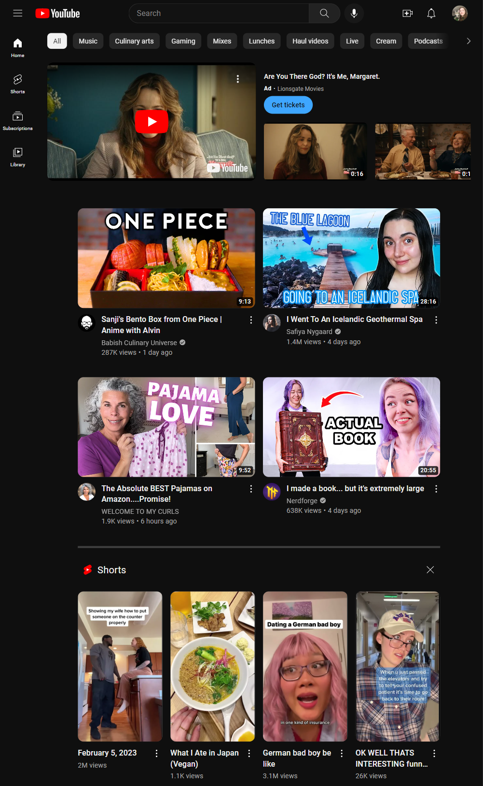

The Lululemon website is a great example of Hick's law. Rather than presenting the user with endless options,
there is a handful of options, each of them easy for the user to differentiate between. The user can quickly
make their decision without feeling conflicted and bombarded with options.

YouTube exibits a prime example of Fitt's law in design. With the add taking up much of the space, there are four
large videos recommended to the user, and four short videos also recommended. The user doesn't have to zoom or scroll,
everything is easily accessible for anyone. I have small hands and often have to reach across my phone screen, but YouTube
is incredibly accessible and easy to use.
Joshua Weissman's website is full of contrast. Each element pops. No boring white background here; instead, the base
is black with yellow to pop. Even the video playing for the current recipe pops against the black. These colors show
excellent contrast and catch the eye of the user quickly and easily.